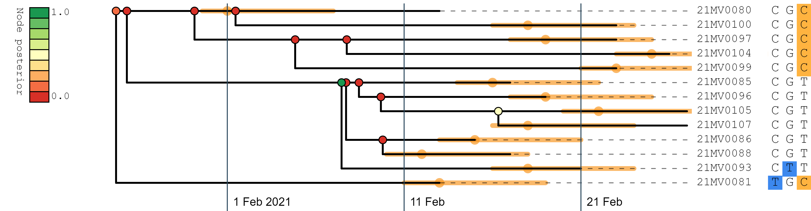
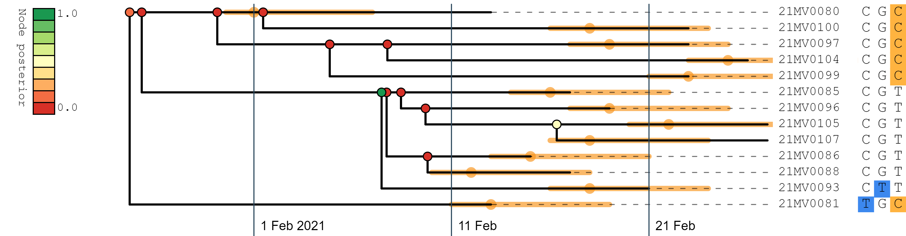
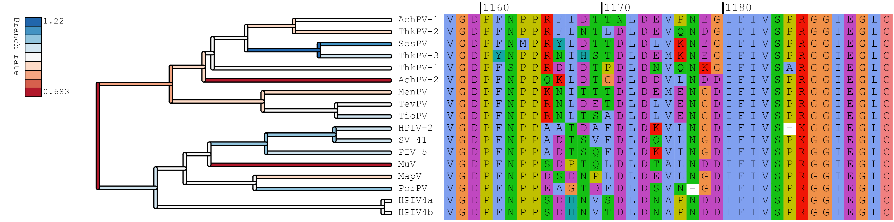
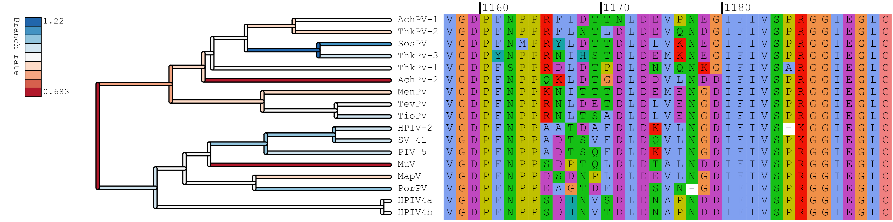

PEACH Tree
Plotting Epidemiological and Alignment CHaracters onto phylogenetic Trees
PEACH Tree Documentation
- Upload a multiple sequence alignment of biological sequences
- Upload a phylogenetic tree, or press Build tree and we will build the neighbour-joining tree from the alignment
- Only the segregating sites are shown, so that you are not overwhelmed with information
- Samples can be filtered and the the segregating sites are recalculated
- Sample dates and symptom onset dates can be displayed on the transmission tree
PEACH Tree is a web tool for rapidly visualising multiple sequence alignments, and is specifically designed for epidemiological domains, such as SARS-CoV-2 pathogen surveillance.
By default, only segregating alignment sites (i.e. sites which vary among the samples) are displayed, making the program suitable for analysis of complete genomic data in a concise format.
A phylogenetic tree can be generated from the alignment or uploaded separately.
Epidemiological annotations can be uploaded (such as symptom onset date) and viewed alongside the rest of the data.
PEACH Tree is an effort to combine genomic and epidemiological modelling into a unified framework.
Examples
SARS-CoV-2 outbreak, Auckland, New Zealand, February 2021
The small-and-contained COVID-19 outbreak that occurred around Valentine's day 2021 in New Zealand can be viewed in PEACH Tree by downloading the files below.
The sample date and symptom onset date of each case can be displayed as epidemiological metadata.
Note that sympton onset dates have been randomised for privacy protection, and only segregating sites are available in the alignment.
In the figure below, the symptom onset dates (minus 2 days, plus 5 days) are indicated by orange bars, and tree nodes are coloured by clade posterior support.
The tree is displayed as a transmission tree, where the top child of an internal node is assumed to have infected the bottom child.
Alignment: valentine.fasta
Tree: valentine.fasta
Epi: valentine.tsv

Douglas, Jordan, et al. "Real-Time Genomics for Tracking Severe Acute Respiratory Syndrome Coronavirus 2 Border Incursions after Virus Elimination, New Zealand." Emerging Infectious Diseases 27.9 (2021): 2361.
Alignment: valentine.fasta
Tree: valentine.fasta
Epi: valentine.tsv

Douglas, Jordan, et al. "Real-Time Genomics for Tracking Severe Acute Respiratory Syndrome Coronavirus 2 Border Incursions after Virus Elimination, New Zealand." Emerging Infectious Diseases 27.9 (2021): 2361.
Paramyxovirus polymerase protein
An alignment of the the large polymerase protein, and a phylogenetic tree for the alignment can be downloaded below and readily viewed in PEACH Tree.
Tree nodes contain annotations summarising the Bayesian posterior distribution of trees.
A subset of cases are displayed in the image below, with branches colouured by substitution rate under a relaxed clock model.
Alignment: polymerase.fasta
Tree: polymerase.fasta

Douglas, Jordan, Alexei J. Drummond, and Richard L. Kingston. "Evolutionary history of cotranscriptional editing in the paramyxoviral phosphoprotein gene." Virus Evolution 7.1 (2021): veab028.
Alignment: polymerase.fasta
Tree: polymerase.fasta

Douglas, Jordan, Alexei J. Drummond, and Richard L. Kingston. "Evolutionary history of cotranscriptional editing in the paramyxoviral phosphoprotein gene." Virus Evolution 7.1 (2021): veab028.
Filtering samples
To filter samples out of the display, samples must be selected first.
These can be selected (or deselected) by clicking on their accession names or by searching for their accessions in the searchbar.
Use shift+click to select multiple consecutive samples.
When samples are filtered out of the display, the segregating sites are recalculated.
To control sample filtering:
Focus:
filter out all unselected samples.
Subtree:
filter out all samples which are not monophyletic (i.e., form a clade) with the selected samples. Requires a tree.
Clear:
clear the selection and display all samples.
Displaying epidemiological information
Epidemiological information can be displayed on the tree or in place of sequence accession names.
Metadata must be uploaded first - ensuring that one of the columns is named "accession".
If there is a tree, open the "Epidemiology" tab and set the "Sample date" to the appropriate date variable, and a calendar will be added to the tree.
This method requires at least 2 unique dates.
Afterwards, the symptom onset dates of cases can be displayed on the transmission tree (plus and minus a time period to reflect infectious period).
Display Options
Display options can be adjusted using the tabs at the bottom of the main page.
They can also be set from the command line using the variable names below.
Download
PEACH Tree can be run in the command line to generate a scalable vector graphics (SVG) file from a series of input files and optional display options.
To do this, first download PEACH Tree from GitHub
git clone https://github.com/phylopeachtree/phylopeachtree.github.io
Then run the C++ executable using
./phylopeachtree.github.io/cpp/peachtree/peachtree -h
with -h enabled to view command line options.